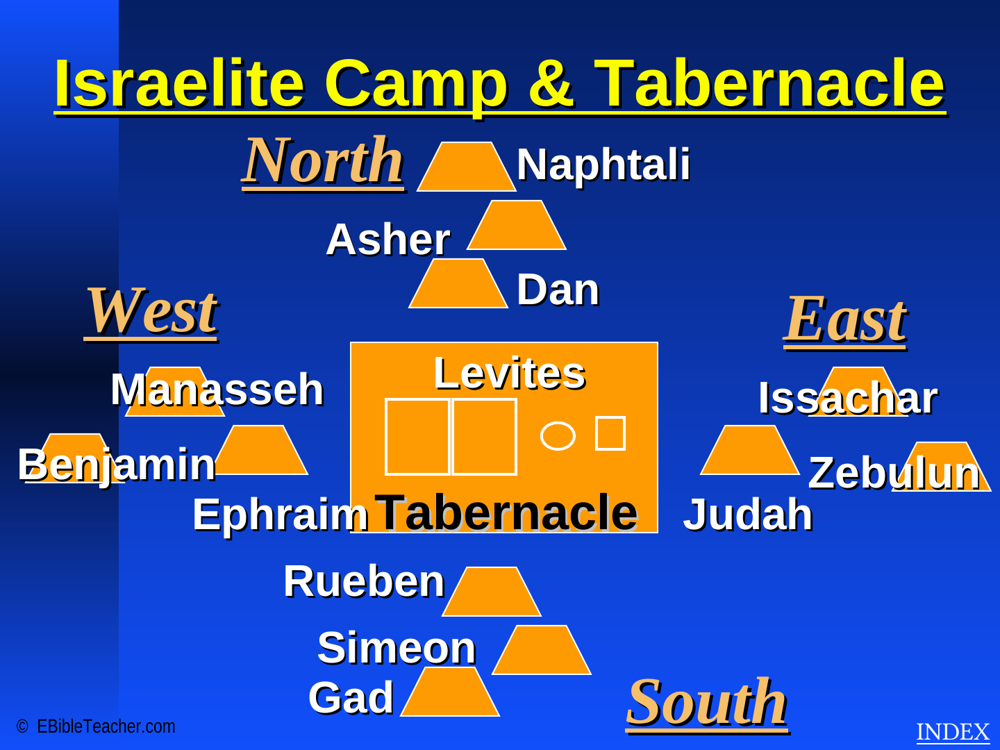

Tabernacle & Temples
The source contains three Tabernacle schematics plus diagrams of Solomon's Temple and Herod's Temple. This page turns that structure into an interactive visual study area.

Compare
Three worship structures.
A simple comparison based only on what the uploaded atlas clearly supports.
| Structure | Source emphasis | Key visual idea |
|---|---|---|
| Tabernacle | Portable worship facility during the wilderness period | Courtyard → Holy Place → Most Holy Place |
| Solomon's Temple | Permanent Temple complex in Jerusalem | Holy Place, Most Holy Place, bronze altar, sea and storerooms |
| Herod's Temple | Large Temple complex in the New Testament era | Courts, altar, Holy Place and Most Holy Place |